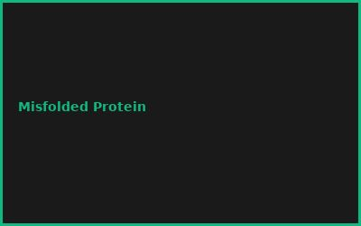
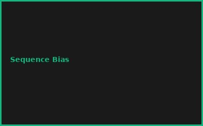
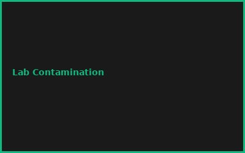
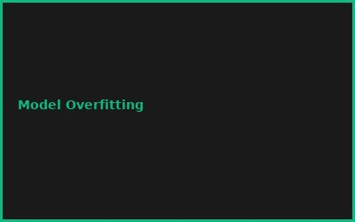

Kapitel 1: DNA/Protein Sequencing
- NGS Data Preprocessing
- Alignment & Assembly (Bowtie2, SPAdes)
- Variant Calling
- Quality Control Metrics
Kapitel 2: Deep Learning Models
# AlphaFold2-Style Protein Structure
from tensorflow import keras
model = keras.Sequential([
keras.layers.LSTM(256, input_shape=(None, 21)),
keras.layers.Dense(128, activation='relu'),
keras.layers.Dense(3, activation='tanh') # (x,y,z)
])
Kapitel 3: Protein Design & Prediction
- Structure Prediction (AlphaFold2)
- Functional Domain Identification
- Design Validation & Scoring
- Directed Evolution Simulations
Kapitel 4: Wet Lab Automation
- Robot Design & Control
- PCR/Cloning Automation
- Synthetic Biology Workflows
- Data Integration Pipelines
Kapitel 5: High-Throughput Screening
- Microplate Reader Integration
- Image Analysis (OpenCV)
- Phenotype Classification
- Feedback Loop Design
Kapitel 6: Deployment & Ethics
- Biosafety & Containment
- Regulatory Compliance (GMO)
- Data Privacy in Genomics
- Responsible AI in Bio
💡 PRO-TIPPS
🎯 Tipp: AlphaFold2 local statt cloud
Problem: Cloud-API = langsam + teuer | Lösung: AlphaFold2 lokal für schnelle Iteration
💰 BUDGET-HACKS (92% KOSTENLOS!)
💰 Hack: OpenSource Bio Stack
Original: Kommerzieller Bio-AI Stack: €50K+ | Hack: Biopython + AlphaFold2 + Nextflow: €0 | Einsparnis: 100%
⚠️ FEHLER
❌ Fehler: Overfitting auf kleine Dataset
Was passiert: Model falsch | ✅ Lösung: Cross-validation + Transfer Learning
🌐 COMMUNITY
BioPython, AlphaFold Community, Synthetic Biology Community, OpenBiology Forum
📸 Fehler-Galerie



